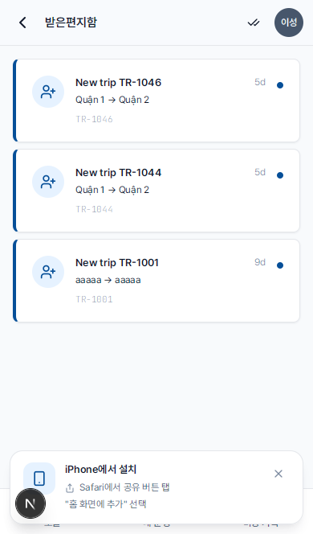

정비 알림 읽기
- 발생 시점
- 상시 운전하는 차량이 엔진오일 교환 주기의 80%에 도달했거나, 자동차 검사 만료가 임박했을 때
- 처리 담당
- 정비 일정을 잡는 것은 관리자/매니저의 업무입니다. 기사는 알림을 확인하고 협조하면 됩니다
- 경고 단계
- WARNING (만료 임박) · CRITICAL (만료 경과)
시스템은 운영 중인 차량을 매일 자동으로 점검합니다. 엔진오일 교환 또는 자동차 검사 만료가 임박하거나 경과한 차량이 발견되면 관리자/매니저에게 경고 알림을 보냅니다. 해당 차량이 본인이 상시 운전하는 차량이라면 기사에게도 알림이 전달됩니다.
알림함 열기
1
상단 바의 종 아이콘을 탭합니다. 빨간 숫자는 읽지 않은 알림 개수입니다.
2
알림 목록에서 정비 관련 알림은 옅은 청록색 배경 위의 체크(✓) 아이콘으로 표시됩니다.

알림의 두 종류
| 종류 | 발생 조건 | 해야 할 일 |
|---|---|---|
| 엔진오일 교환 만료 임박 (WARNING) | 주행거리가 주기의 80% 이상 도달 (기본 5,000km) | 관리자에게 며칠 내로 일정을 잡도록 알립니다 |
| 엔진오일 교환 만료 경과 (CRITICAL) | 엔진오일 교환 주기를 초과 | 관리자에게 즉시 알리고, 교환 전까지 장거리 운행을 피합니다 |
| 자동차 검사 만료 임박 (WARNING) | 만료일까지 30일 이하 남음 | 관리자에게 자동차 검사 일정을 잡도록 알립니다 |
| 자동차 검사 만료 경과 (CRITICAL) | 만료일이 지남 | 자동차 검사를 완료할 때까지 운행 금지 (법규 위반) |
엔진오일 교환 / 자동차 검사 완료 이후
관리자(또는 위임받은 기사 본인)가 OIL(엔진오일) 또는 INSPECTION(자동차 검사) 유형의 비용을 기록하면:
- 알림함의 해당 경고는 자동으로 해결 완료로 표시됩니다
- 정비 주기가 리셋됩니다 (주행거리 0으로 초기화, 다시 카운트 시작)
- 다음날 Cron이 다음 주기 도달 시점까지 동일한 경고를 다시 보내지 않습니다
ℹ️
기사는 경고를 직접 해결하지 않습니다 — 이는 관리자의 업무입니다. 기사는 관리자에게 상황을 알리고, 약속된 시간에 정비소로 차량을 가져가는 등 협조하면 됩니다.